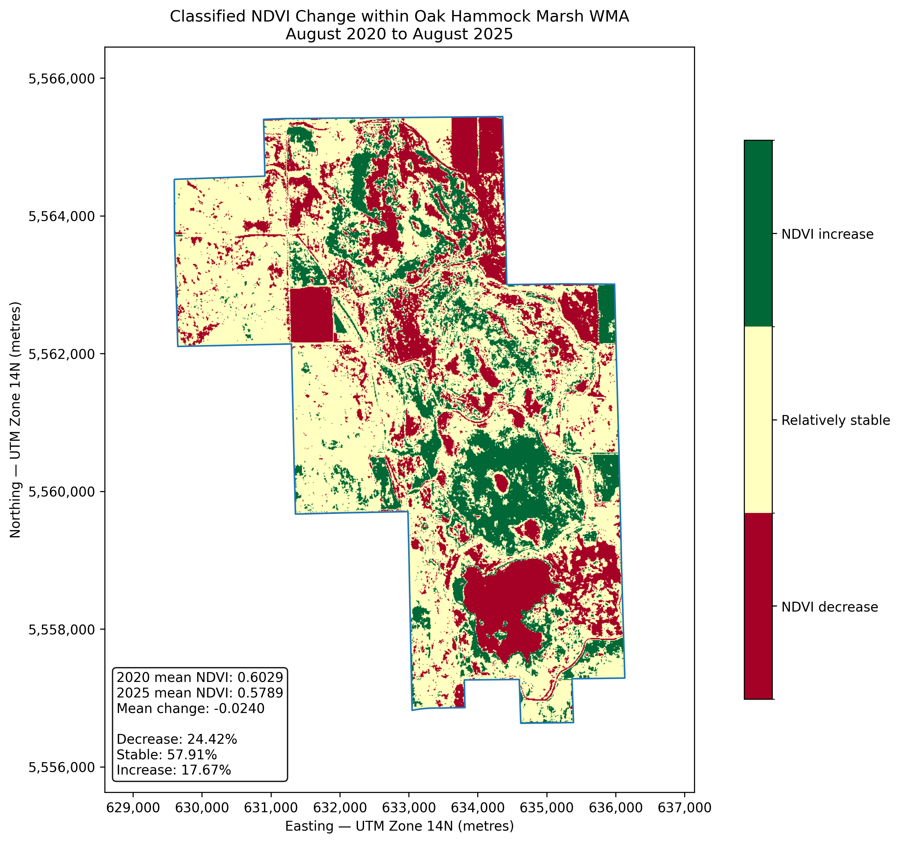
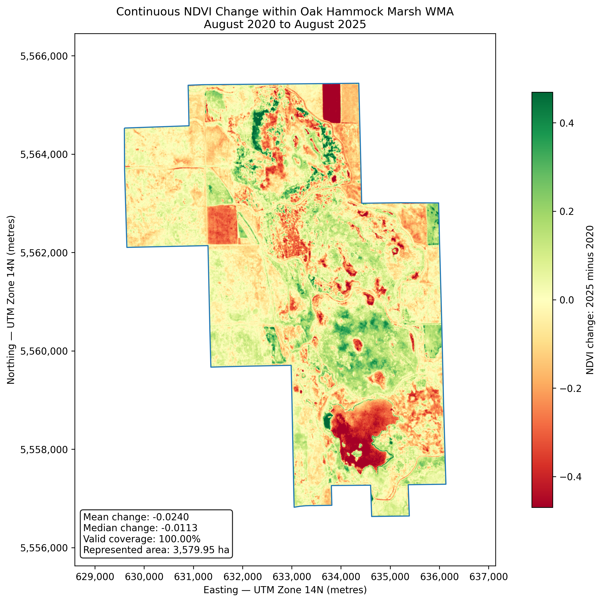
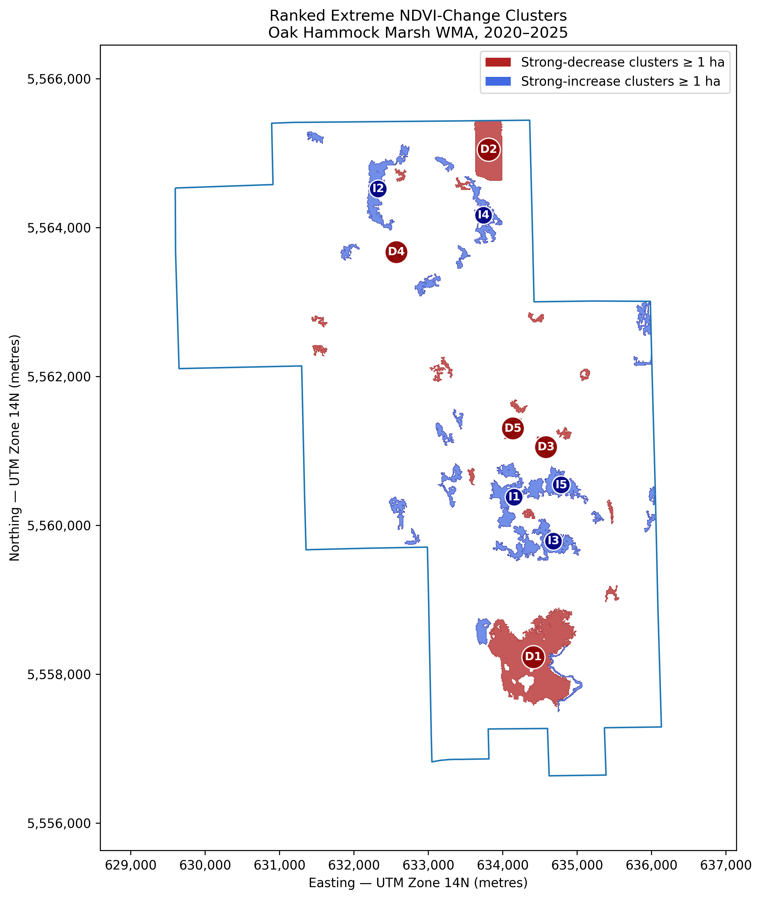
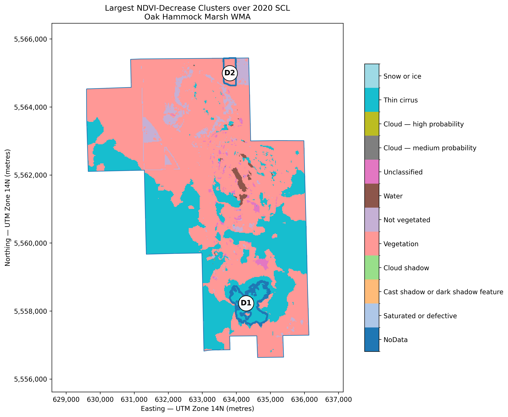
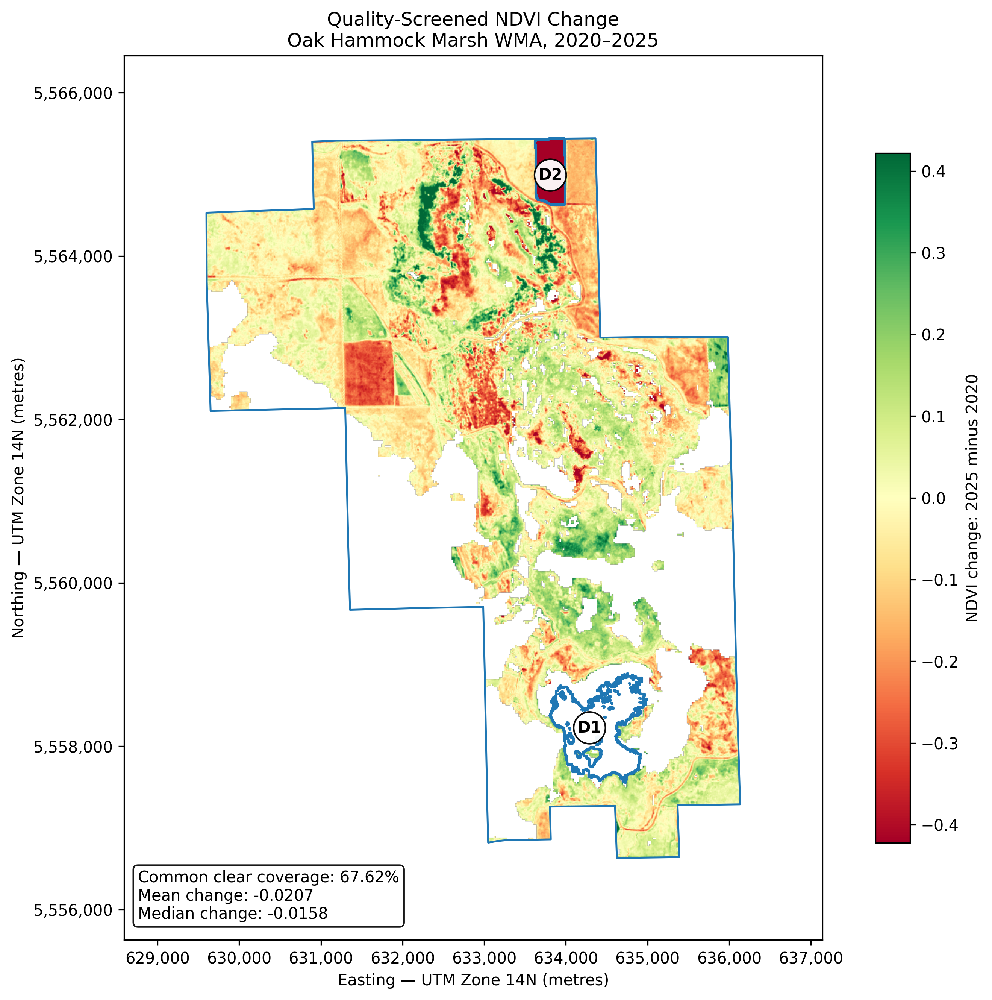
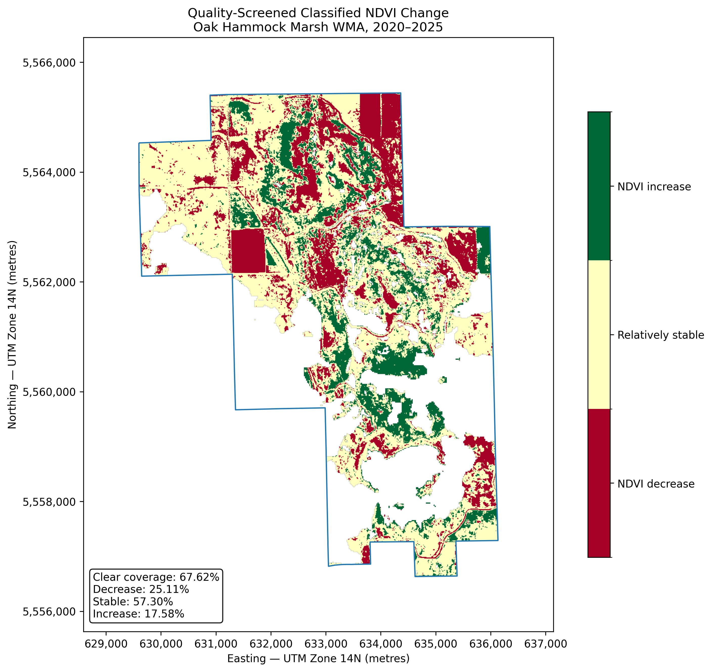

Acquire scenes
Use Sentinel-2 Level-2A imagery from similar growing-season dates in 2020 and 2025.
A portfolio project focused on Oak Hammock Marsh, Manitoba. The workflow compares August 2020 and August 2025 Sentinel-2 imagery to measure NDVI change, investigate water-related spectral signals, and screen image-quality issues before environmental interpretation.
Project overview
The project uses Sentinel-2 Level-2A imagery, GIS, and Python to examine satellite-observed vegetation greenness and water-related spectral conditions in and around Oak Hammock Marsh. It compares August 8, 2020 with August 2, 2025 using NDVI, NDWI, MNDWI, and Sentinel-2 Scene Classification Layer quality information.
The project identifies spectral change. It does not automatically label NDVI decline as ecological degradation or NDVI increase as ecological improvement. Water levels, vegetation type, phenology, image quality, and management conditions may all influence the observed signal.
Graphical workflow
The page version below turns the technical workflow into a visual sequence: acquire Sentinel-2 scenes, validate grids, calculate indices, classify change, test spatial clusters, and then screen results using water indices and Scene Classification Layer quality information.
Use Sentinel-2 Level-2A imagery from similar growing-season dates in 2020 and 2025.
Confirm CRS, resolution, transform, shape, and native 10 m / 20 m grid alignment.
Generate NDVI, NDWI, and MNDWI using calibrated surface reflectance values.
Classify NDVI change, summarize pixels and hectares, and identify extreme connected clusters.
Use SCL and water-index diagnostics to separate credible features from uncertain comparisons.
Maps and plots
Copy the selected PNG outputs from the project repository into assets/images/wetland/figures/. The cards below will automatically display them once the files are in place.

Three-class map showing decrease, relative stability, and increase inside the official WMA boundary.

Pixel-level magnitude and direction of NDVI change, preserving more detail than the classified map.

Connected patches from the strongest NDVI decrease and increase tails, ranked for follow-up investigation.

Shows why the largest original decrease cluster was not a valid clear-to-clear comparison, while D2 remained credible.

Continuous NDVI change after retaining only common clear observations from both dates.

Class proportions after masking questionable observations and limiting interpretation to common-clear pixels.
Results
The initial WMA analysis used 357,995 10 m pixels. Mean NDVI changed from 0.6029 in 2020 to 0.5789 in 2025. After strict quality screening, 242,069 pixels remained available for common-clear NDVI comparison.
Class shares changed by less than one percentage point after quality screening, but cluster-level interpretation changed substantially.
The original WMA mean NDVI change was -0.0240, and the quality-screened mean remained negative at -0.0207.
The largest original decrease cluster had 0% common-clear coverage and cannot be interpreted as confirmed vegetation decline.
D2 had 100% common-clear coverage and is currently the strongest credible large decrease feature for follow-up investigation.
Limitations and next steps
The analysis compares only two dates. Similar calendar timing does not guarantee identical phenology, water levels, soil moisture, management conditions, or atmospheric effects. NDVI, NDWI, and MNDWI are spectral indicators, not direct measurements of wetland health.
The next step is to separate open water, wetland vegetation, and other surface types before interpreting change. Future versions can add more dates, field validation, land-cover classification, and an interactive dashboard.